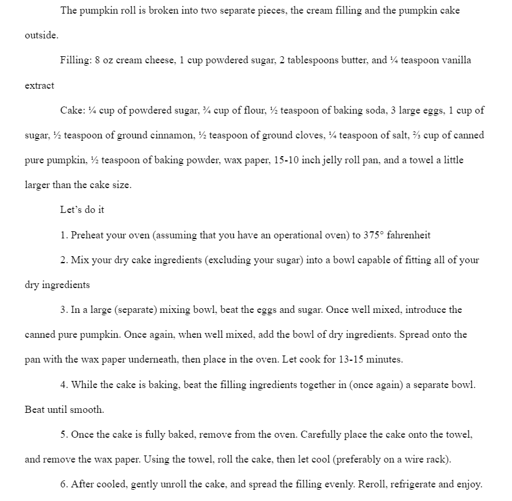

Pumpkin Rolls are a tradition that I and my family hold very dear to us.
They are probably the most delectable holiday treat, my family making four a year.
One for Thanksgiving, one to be frozen for Christmas and New Year, and one for a special anytime snack.
I am not the kind of person who jumps onto the seasonal pumpkin spice trend, but my family’s
pumpkin rolls make me into the most basic of white girls at the beginning of fall, first in line at Starbucks.
